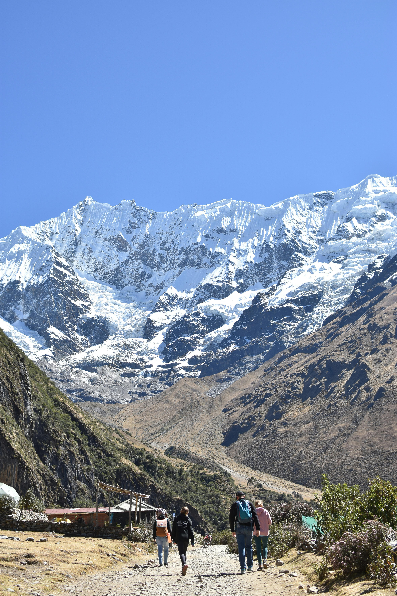

The Salkantay Trek is one of the most scenic hikes in Peru. It is known for its diverse landscapes, from snow-covered mountains to tropical jungles.
This trek is a great alternative to the Inca Trail and offers a more peaceful and immersive experience.

Visit this guide: Salkantay Trek Information